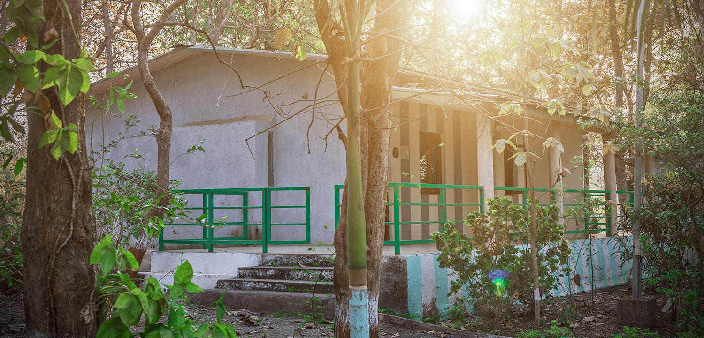

Padamdungari is a campsite located at about 30 kms from Vyara town, and 8 km from Unai village. It is situated amongst the Sahyadri ranges, by the river Ambika. Treks, trails, winding up and down the hillocks, sunset activity, observation towers, relaxing woodlands, and medicinal groves are proposed attractions when you visit Padamdungari. The scenic site has deep, dense, multi-storeyed forests, genetic diversity, rocky, undulating, & enriched landscapes. The fauna consists of big cats, lesser canines, herbivores, birds, reptiles, aquatic animals.
Background
The campsite consists of Tourist huts, a Reception cum interpretation centre, other Facilities / utilities, nature trails, good approach roads and capacity buildings for local people. A visit to nearby religious places like Chand-surya, Unai Hot Springs & Ghusmaai temples, Waghai botanical gardens, timber workshop, Vansda National Park & Shabri Dham is also possible. Activities like tubing, rafting, floating etc. on river Ambika can also be planned.
Facilities
Orientation Centre
2 AC & 8 Non AC Cottages
Tented Accomodations with separate bathing & toilet facilities
Separate Kitchen & Dining places
Beautifully, Well-Designed Amphitheatre
Separate area for Campfire
Machaans for landscape & wildlife viewing
A small rescue centre for injured wildlife animals
Tips
Make sure to visit the orientation centre first before you start exploring the campsite as that would give a good picture of what you are about to experience during your stay.
Most of these Eco Campsites use electricity which is generated by using solar energy, hence please use it responsibly.
No smoking whatsoever (cigarette butts cause many forest fires).
No flash or intrusive photography (for example, don't pluck leaves to clear a better view; reposition the camera instead).
Do not carry any music system or sound making device along with you and remember to keep them switched off if you are driving around.
Picking plants or insects is prohibited in any area; do not remove anything from the parks or sanctuaries.
Do not indulge in any quick or sudden movements to scare off wildlife.
Do not try going too close to the animals.
No pets should accompany you.
No littering. Trash is only to be disposed of in proper receptacles.
No hunting devices or other weapons should be carried, as well as used.

How to Get There?
By Road
The park lies close to National Highway 8 and is bisected by the Waghai-Vansda State Highway. The nearest town is Waghai, 4 km away. It is 28 km from Ahwa, 40 km from Billimora, and 60 km from Saputara. The area is easiest explored with a private vehicle, but public transport is available, though less convenient. There are buses from Surat, Billimora, and Valsad to Vansda village, and from there you can hire a jeep to the park for about Rs 50/- per person. There are no taxi operations close to Vansda, but you can also get a cab from Surat, Bilimora or Valsad. By ST bus, Ahwa, the district headquarters and on a plateau from which begins the ascenscion from Waghai to Saputara, is often the most convenient place to arrive in the Dangs.
By Train
The nearest railway station is Waghai. The narrow gauge rail link connecting Ahwa to Billimora runs through the park, but ask around to check if its still functioning when you come here.